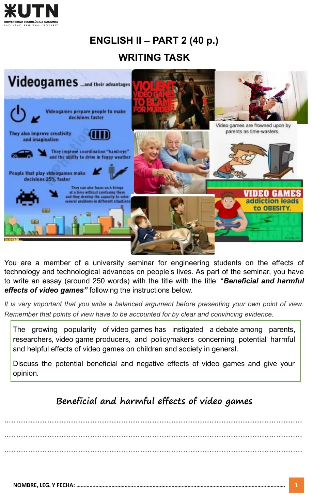
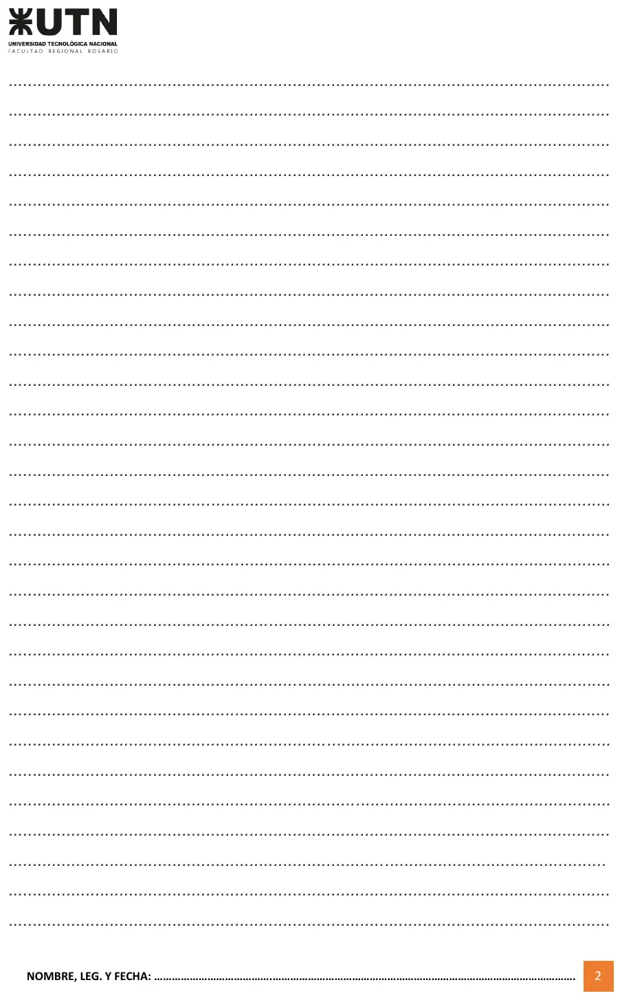

Final Plan 2023, Parte 2 (escritura), 14/11/2023
Final, 14/11/2023
Enunciado




Propuesta de respuesta
Respuesta no verificada. La propuso Luta Studios con inteligencia artificial y ningún docente la revisó. Puede tener errores.
Es un ensayo modelo de 269 palabras, con la estructura del libro y la lista de la hoja. Los datos salen de la infografía y de las imágenes de la hoja, no de estudios de afuera.
| Párrafo | Qué hace |
|---|---|
| 1, introducción | Presenta el debate y dice qué va a hacer el ensayo, sin dar todavía la opinión |
| 2, lo bueno | Toma de la infografía lo de decidir un 25% más rápido, enfocarse en seis cosas a la vez, la creatividad y la coordinación. Va con hedging, como appear to, are likely to, may y suggests |
| 3, lo malo | La violencia, el tiempo perdido y la obesidad que muestran las imágenes, con Critics argue that y could |
| 4, conclusión | Resume, da la opinión recién ahí y cierra con lo que conviene hacer |
Beneficial and harmful effects of video games
The growing popularity of video games has started a debate among parents, researchers, producers and policymakers. While video games are often seen as a useful tool, they are also frowned upon as a waste of time and even as a danger to children. This essay will discuss both the beneficial and the harmful effects of video games before presenting my own point of view.
First of all, video games appear to have a beneficial effect on several skills. According to the infographic in this task, people who play video games make decisions 25% faster, and they can focus on six things at a time without getting confused. Furthermore, video games are likely to improve creativity, imagination and hand-eye coordination, which may even help players drive in foggy weather. In addition, the pictures show grandparents and parents playing with children, which suggests that games can bring families together.
However, video games may also have harmful effects, particularly when they are played for long hours. Critics argue that violent games could increase aggressive behavior, and some media have even blamed them for murders. Moreover, video game addiction is often linked to obesity, because players tend to spend many hours sitting in front of a screen instead of doing physical activity.
In conclusion, video games have both positive and negative effects on children and on society in general. In my view, the benefits are greater than the risks, as long as playing time is controlled and the content is suitable for each age. Therefore, rather than banning video games, parents and schools should teach children to use them in a responsible way.
Respuesta no verificada. Puede tener errores.
Se armó con la página del final, sección «Parte 2, escritura» (cómo se arma, cómo sonar académico y antes de entregar), y la del 2° parcial, secciones «Hedging», «Conectores» y «Vocabulario del tema».
Quedó en duda: No hay rúbrica ni ensayo corregido en el Drive, así que no se sabe cuánto pesa cada aspecto. El armado de Oxford EAP pone this essay will argue en la introducción, y eso adelanta la opinión. La hoja pide la opinión después de los dos lados, así que la introducción solo anuncia el plan. Son 269 palabras y la hoja dice «around 250». El 25% y las seis cosas a la vez son de la infografía de la hoja, que no dice de dónde salen. Si tu comisión pide citar autor y año, sumá datos de los textos de la Parte 1-B. La opinión del final es una de las posibles. El lado contrario vale con la misma estructura y evidencia.
¿Cómo te fue?
Marcá cada tema del examen.
- EscrituraParte 2, escritura, en Final
- EnsayoCómo está armado un párrafo, en 1° parcial